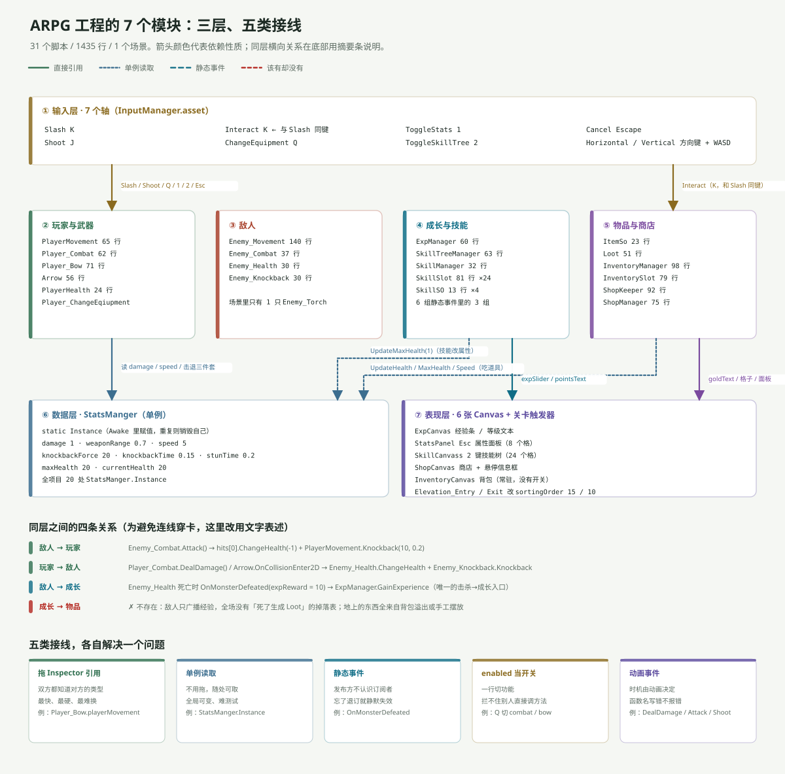
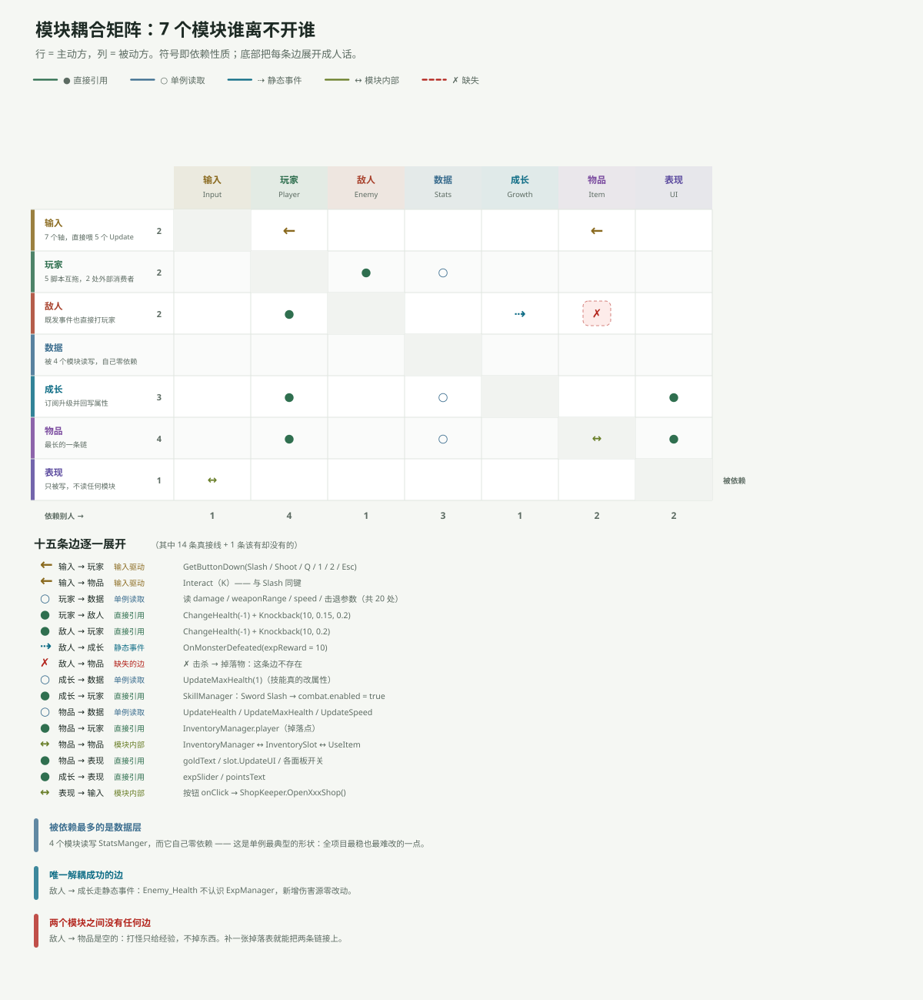

一句话说清
这个工程有 31 个脚本、1565 行代码，但它们不是 31 份并列的代码，而是 7 个模块、5 类接线、1 条断掉的边。
按模块看，一切都有位置；按文件看，只会看到一堆同名的 Update()。
真实规模
先把这个工程称重，后面的所有判断都基于这张表。
| 项目 | 数量 | 说明 |
|---|---|---|
| C# 脚本 | 31 个 | 不含 TextMesh Pro 自带示例 |
| 代码行数 | 1565 行 | 最长 Enemy_Movement 140 行 |
| 场景 | 1 个 | SampleScene，7 层 Tilemap |
| Canvas | 6 张 | 经验条 / 属性面板 / 技能树 / 商店 / 背包 / 玩家 HP |
| 静态事件 | 6 组 | 全部跨模块通信的骨架 |
| 单例 | 2 个 | StatsManger.Instance、ShopKeeper.currentShopKeeper |
| 序列化引用 | 37 条 | 场景里 Inspector 拖出来的那些线 |
| 动画事件 | 6 个 | 近战 2、远程 1（5 个剪辑复用）、敌人 3 |
工程当前状态以代码和场景为准。早期日志里的数字已经被改过好几轮，比如 Day 7 记的是「怪物给 3 点经验」，现在场景里是 10。
三层结构：谁在上、谁在下

三个层次的分工非常干脆：
- 输入层只有一个东西：
InputManager.asset里那 7 个轴。它不知道任何模块存在。 - 逻辑层是 4 个模块，各自独立成一摊：玩家、敌人、成长、物品。
- 底层是 2 个：
StatsManger这个单例（数据），6 张 Canvas + 关卡触发器（表现）。
依赖方向基本是单向的：逻辑层读底层，底层不知道逻辑层。 StatsManger 里没有任何一行代码 import Player_Combat，这是这个工程最稳的一点。
唯一的例外是 StatsManger.statsUI——它持有一个 StatsUI 引用，用来在 UpdateSpeed() 里顺手刷新面板。这行让「数据层」第一次往「表现层」伸了一只手，也直接导致了第 3 篇要讲的面板不同步问题。
七条链路，七种走向
这 7 个模块不是孤立的，串起来是 7 条能跑通的链路。下表是每条链的起点和终点：
| # | 链路 | 起点 | 终点 |
|---|---|---|---|
| 1 | 移动 | 输入轴 | rb.velocity |
| 2 | 近战 | Slash（K） | Enemy_Health.currentHealth |
| 3 | 远程 | Shoot（J） | Enemy_Health.currentHealth |
| 4 | 成长 | 敌人死亡 | StatsManger.maxHealth |
| 5 | 物品 | 地上 Loot | StatsManger 三个字段 |
| 6 | 交易 | 金币 | InventorySlot.quantity |
| 7 | 交互 | Interact（K） | shopCanvasGroup.alpha |
注意第 2、3 条链的终点是同一个字段，第 4、5 条的终点也是同一个字段。所有链最后都收敛到 StatsManger 的那几个 int 上——这不是设计出来的，是 Day 6 收拢数值时自然形成的结果。好处是改数值只有一个地方，坏处是那里一旦出错，所有链一起错。
五类接线：各有各的代价
跨模块通信在这个工程里只有五种写法，认全了就能读懂任何一段代码。
| 接线方式 | 优点 | 代价 | 例子 |
|---|---|---|---|
| 拖 Inspector 引用 | 最快、最直观 | 双方必须知道对方类型 | Player_Bow.playerMovement |
| 单例读取 | 不用拖，随处可取 | 全局可变、难测试 | StatsManger.Instance.speed |
| 静态事件 | 发布方不认识订阅者 | 忘了退订就静默失效 | OnMonsterDefeated |
enabled 当开关 | 一行切功能 | 拦不住别人直接调方法 | Q 键切 combat / bow |
| 动画事件 | 时机由动画决定 | 函数名写错不报错 | DealDamage / Attack / Shoot |
这五种里，只有静态事件是真正的解耦。其余四种都要求某一方认识另一方。
6 组事件与 2 个单例
整个工程只有 6 组静态事件，它们承担了所有「我不想认识你、但我要通知你」的需求：
| 事件 | 签名 | 发布者 | 订阅者 |
|---|---|---|---|
OnMonsterDefeated | (int amount) | Enemy_Health | ExpManager |
OnLevelUp | (int points) | ExpManager | SkillTreeManager |
OnAbilityPointSpent | (SkillSlot) | SkillSlot | SkillTreeManager、SkillManager |
OnSkillMaxed | (SkillSlot) | SkillSlot | SkillTreeManager |
OnItemLooted | (ItemSo, int) | Loot | InventoryManager |
OnShopStateChanged | (ShopManager, bool) | ShopKeeper | InventorySlot |
看得出规律的：事件载荷都很小（一个 int、一个 bool、一个引用），而且发布方从不关心谁在听。
两个单例里，StatsManger 是纪律很好的那种（只读为主，写入都走 UpdateXxx 方法）；ShopKeeper.currentShopKeeper 则是「当前开着哪家店」的临时指针，只在开店那一刻被赋值。
耦合矩阵：一眼看出谁最重

矩阵读法：行是主动方，列是被动方，格子里的符号是依赖性质。
三条结论：
① 被依赖最多的是数据层。 4 个模块读写 StatsManger，而它自己零依赖——这是单例最典型的形状：全项目最稳、也最难改的一点。
② 唯一解耦成功的边是「敌人 → 成长」。 走静态事件，Enemy_Health 压根不知道 ExpManager 存在。以后加陷阱、毒、召唤物，只要它们也发这个事件，成长系统一行都不用改。
③ 有两个模块之间没有任何边。 「敌人 → 物品」是空的：打怪只给经验、不掉东西。补一张掉落表就能把这两条链接上，这是目前性价比最高的一个改动。
和已有日志对不上的地方
跨了 16 天才回头写模块专文，有几处日志和代码已经不同步了，这里一次说清：
| 日志里的说法 | 现在的代码 |
|---|---|
Day 7：expReward = 3 | 场景里 Enemy_Torch 的 expReward = 10 |
Day 16：ShopKeeper 81 行 | 现在 92 行 |
| Day 10：升级没真给点数 | OnLevelUp 已接到 SkillTreeManager，升级确实 +1 点 |
Day 14：InventoryManager 97 行 | 现在 98 行 |
模块专文以现在的代码为准；那几篇日志保留当时的现场，不回头改。
一句话总结
31 个脚本读起来乱，是因为它们按「哪天写的」排列；一旦按「输入 / 逻辑 / 数据表现」三层和「五类接线」重组，7 个模块的边界就非常清楚了——逻辑层之间靠 6 组事件说话，逻辑层与底层之间靠单例和一个 statsUI 引用说话，而敌人和物品之间一句话都没说。